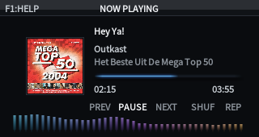
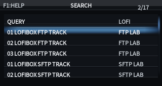
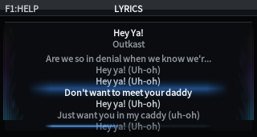
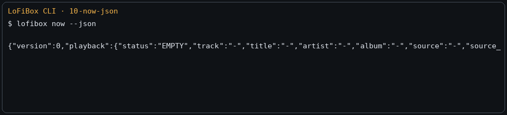

GUI
Designed for 320x170 screens, X11 desktop windows, and device front panels. Covers the main menu, library, search, Now Playing, lyrics, and EQ.
Linux-first music player
A music player for Cardputer Zero, Raspberry Pi, Linux desktops, SSH terminals, and remote media libraries. GUI, TUI, CLI, and future Agent interfaces all sit on the same runtime.


Preview APT Repository
GitHub Pages carries two separate surfaces: the root directory is the public website,
while /debian is the machine-readable APT repository. Keeping them separate protects the install path from website content.
sudo install -d -m 0755 /etc/apt/keyrings
curl -fsSL https://vicliu624.github.io/lofibox-apt/lofibox-archive-keyring.pgp \
| sudo tee /etc/apt/keyrings/lofibox-archive-keyring.pgp >/dev/null
sudo tee /etc/apt/sources.list.d/lofibox.sources >/dev/null <<'EOF'
Types: deb
URIs: https://vicliu624.github.io/lofibox-apt/debian
Suites: trixie
Components: main
Architectures: amd64 arm64 armhf
Signed-By: /etc/apt/keyrings/lofibox-archive-keyring.pgp
EOF
sudo apt update
sudo apt install lofibox~lofibox<run> suffix; after the stable Debian flow is ready, this repository remains a preview channel.
Interfaces
GUI serves small screens and desktop windows, TUI serves native terminal control, and CLI serves one-shot commands, scripts, systemd, tests, and Agents. They share one runtime.
Designed for 320x170 screens, X11 desktop windows, and device front panels. Covers the main menu, library, search, Now Playing, lyrics, and EQ.
A terminal console for Now Playing, Lyrics, Spectrum, Queue, and EQ. Built for SSH, servers, and developer workflows.
A command surface for people and machines. Human-readable by default, with --json and --porcelain for scripts and Agents.
Core Domains
LoFiBox is a local-file player that brings the local media library, remote sources, metadata governance, lyrics, artwork, fingerprints, cache, and EQ into one product object model.
Scan media roots, inspect index status, query tracks, albums, artists, and genres, search consistently, and manage queues. CLI and GUI search use the same media item semantics.
Remote media is split into a source configuration layer and a remote browsing/resolution layer.
Supported targets include Jellyfin, Emby, Navidrome/OpenSubsonic, Direct URL, Internet Radio, Playlist Manifest,
HLS/DASH, SMB/NFS/WebDAV/FTP/SFTP, and DLNA/UPnP.
LoFiBox separates lookup, diff, apply, cache, writeback, and fingerprint indexing so auto-completion never silently becomes file mutation.
Supports 10-band graphic EQ, presets, preamp, ReplayGain, loudness, limiter, balance, HPF/LPF, and bindings by device, content, or source.
Screens
GUI, TUI, and CLI share one runtime, so desktop windows, terminal consoles, and script output agree on playback state and library meaning.



